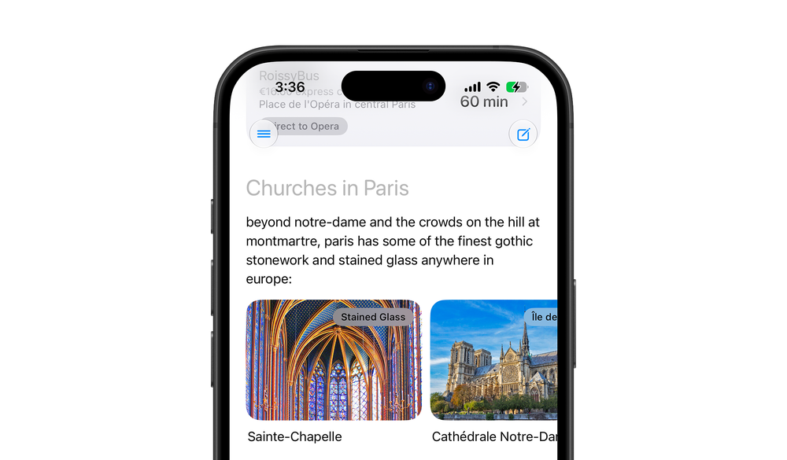
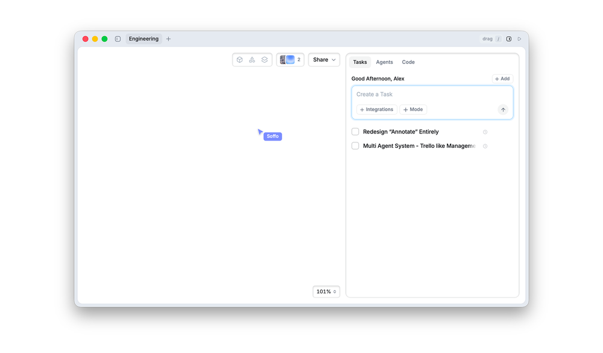

An intuitive, non-deterministic interface built for consumers
Not making the system simple, but making its complexity effortless to interact with.
Frida for everyday questions, Soffo for engineering, with every agent out of sight.

